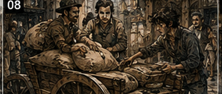
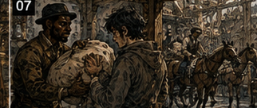
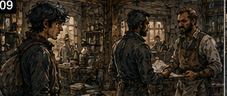

Antonius owned my morning. I objected to this on principle. Not the debt. The morning. Mornings were useful. Hessa preferred them for conditioning because the body was rested. Arlo's workshop was quieter before deliveries began. The guild posted fresh contracts early. Gambling rooms were mostly empty, which made morning excellent for thinking about gambling without actually gambling. Antonius had taken the best part of the day and replaced it with Rusk. Rusk was waiting outside the warehouse when I arrived. He handed me a sack. I looked at it. Then at him.
"What is this?"
"Flour."
"I know what flour is."
"Good start."
The sack weighed perhaps forty pounds. Not difficult. Insulting. I looked past him into the warehouse. Crates. Sacks. Barrels. Two carts. Three laborers. A clerk at a narrow desk. Nothing that looked remotely like the inner machinery of a future financial empire.
"Where's Antonius?"
"Working."
"Doing what?" Rusk pointed at the sack.
I said, "Not that." I disliked Rusk. He had a very economical sense of humor. I picked up the flour.
"Where?"
"Cart."
There were two carts.
"Which?" He pointed.
I carried the sack. This was creditor labor. Apparently Antonius's grand criminal enterprise began with flour. That was interesting for almost ten seconds. Then Rusk handed me another sack. By the sixth, I had developed a theory. Antonius was testing whether I would complain. I therefore did not complain. By the twelfth, I revised the theory. Antonius did not care whether I complained. He needed flour moved. That was worse. I had expected something criminal.


Collections, perhaps. Threats. A ledger containing names that would eventually matter. Smuggling. Blackmail. A secret room.
Instead I was loading flour beside a man named Toma who had a rash on his neck and hummed the same six notes repeatedly. Future Greg knew Antonius Vale as a lender whose influence eventually touched shipping, construction, mercenary companies, city officials, guild contracts, and enough private debt to make three governments nervous. Present Antonius owned two carts and too much flour. I put another sack on the cart.

Then another. My shoulder hurt. Sword training yesterday. Excellent scheduling, Greg. Rusk appeared with a crate.
"Careful."
"What's in it?"
"Glass."
"Valuable?"
"More valuable if you don't drop it." I took the crate. There were markings on the side.
Lamp chimneys.
No.
Medicine bottles? I shifted it. Glass clinked.
"Where is this going?"
"North market."
"To whom?"
"Doesn't matter."
"It matters if I'm carrying it."
"No."
I said, "Suppose I could improve the route." Rusk stared at me. I stared back. He pointed at the cart. I loaded the crate.
Fine. Constraint. Move things. I could move things. I was not going to optimize flour. That sentence lasted approximately seven minutes. Then the second cart was loaded badly. Objectively badly.
Heavy barrels too far rearward. Breakables beside iron fittings. Three deliveries on the same cart arranged in almost the exact opposite order they would be unloaded. I looked at it. Then at the clerk. Then at the cart again. Not my problem. I picked up another sack. The clerk shouted for Toma to move two crates because the East Street order had been placed under the North Market order. Toma stopped humming. He moved them. The flour shifted. One sack tore. White powder spilled across the cart bed.
Everyone swore. I stood there. Not my problem. Rusk looked at me.
"What?"
"You have a face."
"I always have a face."
"Different one." I hated observant people.
I said, "The cart is loaded wrong." Rusk looked at the cart.
"It's loaded."
"Those aren't the same thing."
"Will it move?"
"Probably."
"Then it's loaded." I opened my mouth.
Closed it. Picked up another sack. The problem followed me. Not emotionally. Structurally.
The East Street order was under the North Market order because the clerk loaded by arrival time instead of delivery sequence. The heavy barrels sat rearward because they had arrived last. The glass sat beside iron. Toma had just torn flour digging through a finished load to correct the order. I carried another sack. What was I doing?
Paying debt. Antonius wanted labor. I wanted time. Could I finish the labor faster? Maybe. I put the sack down.
"Rusk."
"No."
"I haven't asked anything."
"You were going to."
"I can make this faster."
"No."
"Why?"
"Because Antonius said you work."
"This is work."
"This is you trying not to work."
That was unfair. Accurate. Still unfair.
I said, "I can reduce loading time." Rusk leaned against the cart.
"By carrying faster?"
I said, "By making Toma stop moving the same fucking crate three times." Toma looked over.
"I moved it twice."
"You're about to move it again." He looked at the cart. The clerk shouted, "Toma, blue crate needs to come out." Toma looked at me. I smiled. Rusk sighed.
"Five minutes."
Good.
I went to the clerk.
I asked, "What are the stops?" The clerk looked at Rusk. Rusk nodded once. The clerk showed me the sheet.
Seven stops. Two carts. Approximate weights. Items listed. No route order. I knew Carrow well enough to see the obvious problem immediately. Then I caught myself. Future Carrow. Present Carrow. Roads changed. Shops moved. A bridge I remembered might not exist.
Good.
Check.
"Which streets are blocked?"
The clerk frowned.
"None."
"Market day?"
"South."
"Bridge toll?"
"Which bridge?"
I asked three more questions. The clerk became irritated. He knew the routes. I did not.
"Show me how you'd deliver these." He did.
Badly. Not stupidly. Habitually. I used his route knowledge and rearranged the stop order, then the load: last delivery first, heavy weight centered, glass isolated, items grouped by stop. Toma watched.
"You a carter?"
"No."
"Warehouse?"
"No."
"Merchant?"
"No."
"What are you?"
"Currently?" I looked at the flour on my shirt.
I said, "Apparently this." Rusk laughed.
That was the first time I heard him do it. We reloaded one cart. That cost time. The clerk complained. Rusk let him. Then we took the route. I went because I wanted to see whether I was right. Rusk said I went because Antonius owned my morning. Both could be true. The first stop took half the usual unloading time. I knew that because Toma told me. The second was faster. At the third, we discovered I had put a crate on the wrong cart.
Not metaphorically. Wrong cart. I had read the clerk's handwriting incorrectly. The other cart was now carrying a North Market delivery toward East Street. I stared at the empty space where the crate should have been. Toma stared at me. Rusk stared at me.
"Excellent," I said. Toma started laughing. I had optimized the system and misplaced the product. That felt familiar. We lost most of the time we had saved fixing it.
Good.
Information. The system needed marks large enough that an idiot could not misread them. I was currently the idiot. At the next stop I bought chalk. With my own copper. That hurt more than it should have. I marked each stop with a symbol. Circle. Cross. Two lines. Triangle. Not literacy dependent. Not handwriting dependent. Toma understood immediately. Rusk watched.
"What?"
"Nothing."
"You keep doing that."
"Doing what?"
"Getting interested."
"I am not interested."
"You bought chalk."
"That's evidence of frustration."
We finished the route slightly earlier than usual. Not dramatically. Enough. Back at the warehouse, I expected Antonius to be impressed. He was not there. I had apparently spent half the morning preparing a speech for an absent man. Rusk handed me a broom. I stared at it.
"No."
"Floor."
"I just reorganized your delivery process."
"You also put medicine bottles on the wrong cart."
"Once."
"Floor." I considered several responses.
Then swept. Flour had at least felt like labor. Sweeping felt symbolic. I was one of seven S-class people in the world. Would be. Had been.
Chronology made boasting difficult. I swept around a barrel. The broom caught a nail. I bent down, picked it up, and noticed three more near a broken pallet. That made me look at the pallet. That made me look at the stack beside it. That made me notice the bottom boards were damp. That made me notice the wall behind them was darker than the rest. Water. Small leak.
Bad storage position. The sacks against that wall were grain. I closed my eyes.
"No," I said. Toma looked over.
"What?"
"Nothing." I kept sweeping.
Five strokes. Six. Seven. The grain was going to mold. Not today. Eventually. Not my problem. Eight strokes. How much grain? Nine. What did grain cost? Ten. Fuck. I put the broom down. Rusk saw me.
"No."
"The wall is wet." He looked.
"So?"
"Those sacks shouldn't be there."
"They've been there for months."
"That's not the defense you think it is." He came over.
Touched the wall. Looked at the grain. Then at me.
"You know grain?"
"No."
"Water?"
"Yes." He waited. I sighed.
"I know expensive mistakes."
That afternoon I was late to Hessa. She did not care why.
"You chose the debt," she said.
"I chose several things."
"That appears to be the problem." I disliked everyone today. She made me breathe.
Four counts. Hold. Release. Again. My shoulders were tired from flour. My palms were rough. My back ached. The mana response came weaker than yesterday. I became angry at the warehouse. Then at Antonius. Then at myself. Anger made the response worse. Hessa tapped my wrist.
"Again."
"I know."
"Then do it."
Four counts. Nothing else. No debt. No warehouse. No sword. No Arlo. Breath. Response. Hold. For five breaths, I managed it. Five. I opened my eyes. Hessa nodded. That was all. I wanted applause. Apparently S-class had not cured that either. After training, I should have rested. Instead I went to Arlo. He had three new disks. One cracked.
One performed worse than the previous batch. One performed slightly better.
"How much better?" I asked.
"Not enough to justify that face."
"What face?"
"The one where you've already built a factory." I looked at him. He was learning me.
Unfortunate.
"Slow," Arlo said.
"I know."
"You say that like it's an insult."
"It often is."
He showed me the notes. I understood perhaps half and remembered enough future terminology to be dangerous. I asked two questions. One was useful. The other revealed I had misunderstood what Arlo was measuring.
Good.
Another correction. I left without funding another batch. That was difficult. I was proud of myself for almost an entire street. Then I thought of three cheaper tests Arlo could run. I turned around. Stopped.
"No."
A woman passing me gave me a wide berth. Reasonable. The next morning Antonius gave me a list of addresses. Collections. Finally. I smiled. Antonius noticed.
"Why are you happy?"
"This is more appropriate."
"For what?"
"Your business." He looked around the warehouse.
"This is my business."
"No. This is flour."
"Flour pays."
"Debt pays better."
"Sometimes."
That made me pause. Antonius took the list back before I could read it.
"Actually, no."
"What?"
"You smiled."
"So?"
"I don't like that."
"You are assigning work based on whether I enjoy it?"
"Today."
"That's childish."
"Carry those." He pointed at a stack of small wooden boxes. I stared at him.
"You were going to send me on collections."
"I changed my mind."
"Because I was interested."
"Yes."
I said, "That is an insane management philosophy." Antonius smiled.
"You're in debt to a loan shark because you borrowed money to gamble."
"Working capital." He laughed.
Not politely. Actually laughed. I stood there while Antonius Vale, future terror of half the city's merchants, laughed hard enough to put one hand on his desk. This was not how I remembered him. That thought caught. Of course it wasn't. I remembered an older man. Heavier. Quieter. A reputation that entered rooms before he did. This Antonius was what, thirty?
Maybe less. Still building. Still amused by things. Still personally aware of flour. Antonius wiped his eye.
"Working capital," he repeated.
"It was."
"You lost it."
"Temporarily."
That started him again. I disliked him intensely. Also, perhaps, slightly liked him. Dangerous.
"Boxes," Antonius said.
"Where?"
"Inventory."
"What am I doing with them?"
"Counting." I stared. He smiled. He was enjoying this now.
Fine. I counted boxes. There were eighty-three. The ledger said eighty-six. I counted again. Eighty-three. I checked the shelf. Nothing. Asked the clerk. He shrugged. Asked Toma. He thought two had gone out yesterday. Two. Not three. Asked Rusk. He did not know.
Good.
A missing box. Finally a problem. I opened the ledger.
"Don't," the clerk said.
"I'm counting."
"With your eyes?"
"Advanced technique."
The missing boxes contained lamp oil fittings. Low value individually. Not worth stealing. Probably. Three missing across a month? I checked older entries. Not because Antonius asked. Because the discrepancy annoyed me. Two missing last month. One before that. Always small hardware. Always quantities close enough nobody cared. Not theft? Breakage? Miscounts?
I looked at receiving. Then dispatch. Different clerks sometimes. Same shelf. I watched for twenty minutes. A laborer came in, took four fittings for a delivery, told the clerk five, then corrected himself after the clerk had already marked five. There. Not crime. Process. Boring. I was disappointed.
Then I realized boring errors repeated every day became money. That made them less boring. I spent the next hour building a crude token system. Take an item, move a marker. Return an item, move it back. The clerk hated it. Toma liked it because he could see stock without asking. Rusk did not care. Antonius returned while I was arguing with the clerk.
"What happened to counting?"
I said, "Your inventory process is bad." Antonius looked at the clerk. The clerk looked betrayed.
"It works," he said.
"It leaks."
"How much?" Antonius asked. I told him. He looked at the missing quantity. Then at me.
"That's not much."
"No."
"So why do you care?" I opened my mouth.
Stopped. Because it was wrong. Because I could see the fix. Because once the problem had edges, leaving it ugly felt physically irritating.
"I don't know."
That was honest. Antonius's expression changed slightly. Interesting. Not softer. More attentive.
"Show me."
So I did. Not the grand version. I had already imagined the grand version. Standardized receiving. Route coding. Inventory zones. Loss tracking. Supplier comparisons. Delivery-time records. Credit risk tied to merchant reliability. Once I started thinking about Antonius's operation, the branches were multiplying again. I wanted to tell him all of it. I nearly did. Then I remembered yesterday's cart.
One problem. Show the token system. I showed him. Antonius asked three questions. Good questions. One exposed a weakness immediately.
"What stops someone moving the marker without taking the item?" I stared at the tokens.
"Nothing."
"So your perfect system is theft with decoration."
"It's not perfect."
"Yesterday you would have told me it was."
That irritated me because yesterday I might have. I adjusted. Token attached to the storage position. Clerk moves it when recording. Not laborer. Still imperfect.
Better.
Antonius watched me rebuild it.
"You do this a lot?" he asked.
"What?"
"Turn one thing into six things."
"I improved your inventory."
"You reorganized a cart, found a leak, moved my grain, bought chalk, annoyed my clerk, and now you're redesigning the shelf because I told you to count boxes."
"When you say it like that, it sounds productive."
"It sounds exhausting."
"For you?"
"For everyone." I smiled. He did too.
Not trusting. Definitely not friendly. Curious. That was more useful.
"Collections tomorrow?" I asked.
"No."
"Why?"
"Because you want to."
"You're going to run out of unpleasant work." Antonius looked around the warehouse.
"No, Greg. I'm really not."
The third day he put me on a cart with Rusk and told us to collect overdue rent from three storage tenants. I pointed at him.
"This is collections."
"Rent."
"Debt."
"Boxes with doors."
"You're cheating."
"Get in the cart." I did.
The first tenant paid. The second did not. Rusk knocked. A man opened the door. Thin. Tired. Hands stained blue. Dyer.
No.
Ink? Something chemical. He looked at Rusk first. Then me. Dismissed me.
Good.
Rusk said the amount. The man said he needed four days. Rusk said two. The man said impossible. I watched. Fear?
Yes.
But not of Rusk. Of the door behind him. Interesting. I looked past his shoulder. Shelves. Wrapped bundles. A woman sitting at a table. Child?
No.
Young apprentice. Bandaged hand. The man's eyes kept moving toward the back shelf. Not the apprentice. The shelf. Inventory. He had product. Why not sell? Maybe unsellable. Maybe committed. Maybe worth more later. Maybe stolen. My brain branched. I let it. Constraint first. Collect rent.
"What's on the shelf?" I asked. The man looked at me.
"Nothing."
Lie.
"Excellent," I said. Rusk sighed.
"What?" the tenant asked.
"Nothing is usually easier to sell."
"Who the fuck are you?"
I said, "Currently? Rent collection." Rusk made a sound that might have been a cough. I stepped slightly sideways so I could see the bundles.
Dyed cloth. Deep blue. Good color. Expensive? Maybe. I knew nothing about cloth. Important. Do not become a textile expert because you saw blue.
"What are you waiting for?" I asked. The man said nothing.
"Buyer?"
His face changed. There.
"Buyer is late," I said.
"No."
"Then you're late."
Silence. Rusk looked at me now. The man rubbed his thumb against his palm. Anxiety.
"How late?"
"Two days."
"How much do they owe you?"
"That's none of your business."
"Correct. Your rent is our business. Your buyer is currently standing between those two things." He stared. I could become threatening Greg.
Easy. Rusk was already doing that by existing. Not needed. I could become sympathetic Greg. Maybe. The man wanted dignity more than sympathy. Different role. Businessman. Fine. I straightened slightly. Changed my voice. Not much. Enough.
"Your problem isn't that you can't pay. Your problem is that your cash is trapped in cloth for forty-eight hours."
His eyes narrowed.
Good.
I said, "Rusk's problem is that Antonius is owed today." Rusk said nothing.
Excellent support.
"So solve both. Partial now. Written date for the rest. Something held against it if the buyer fails."
The tenant looked at Rusk. Rusk looked at me. I had just invented terms on Antonius's behalf. Potential issue. Rusk said, "What security?" Good man. The tenant looked back at the cloth. Of course. We took two bundles under seal. Not ownership. Security. He paid part. Signed the remainder for three days. On the cart, Rusk drove in silence. I waited. Finally he said, "Antonius said two days."
"Three was better."
"He said two."
"He would rather get paid."
"You know that?"
"Yes."
"How?"
Future Antonius?
No.
Present Antonius. Flour pays. Small losses matter. He was not a thug pretending to be a financier. He was a financier willing to use thugs. Different thing.
I said, "He asks about systems before punishment." Rusk looked at me. Then back at the road.
"Sometimes."
Good.
Not certainty. Evidence. The third tenant was gone. Empty unit. That was worse. Rusk swore. I looked inside. Dust. Broken crate. Straw. A bent nail. Nothing. No obvious clue. My mind immediately tried to become tracker Greg. I had never been a tracker. I had known trackers. Different thing. I crouched anyway. Footprints? Several. Old. Useless. Cart marks? Maybe.
I stared. Rusk watched.
"You know what you're looking at?"
"No." He laughed.
"Finally."
"Give me a moment." I looked harder.
Still nothing. Future knowledge? Tenant name meant nothing. Trade? Metal fittings. Destination possibilities? Too many. I could construct a theory. Several, actually. That was the problem.
"He left," I said. Rusk nodded.
"Brilliant."
"Thank you."
"Where?"
"No idea."
"More brilliant." I stood.
That failure bothered me more than it should have. There were no useful constraints. No person to read. No process to inspect. Just absence. Open field. My brain produced possibilities. Dock. South gate. Another lender. Family. Fraud. Fire. Caravan. None were worth anything. I hated it. Rusk noticed.
"You really don't know."
"No."
"Thought you knew everything."
"I know an alarming amount."
"Not this."
"Not enough information yet." He grinned.
Apparently that phrase sounded exactly as defensive as it was. Back at the warehouse, Antonius listened to Rusk's report. First tenant paid. Second restructured. Third gone. Antonius looked at the sealed cloth. Then at me.
"You took collateral."
"Temporarily."
"You extended him an extra day."
"Yes."
"Without asking."
"Also yes."
"You enjoy being employed?"
"Not particularly."
"Interesting strategy."
"He'll pay."
"Maybe."
"He will."
"Future knowledge?"
"No."
That answer came quickly. Antonius noticed.
"Then what?"
"He was protecting the cloth more than he was afraid of Rusk. He has a buyer. The buyer is late. He hates owing us because it makes him look weak, not because he intends to run. He'll pay." Antonius looked at Rusk. Rusk shrugged.
"Sounded right," Rusk said. Antonius looked back at me.
"And the third?"
"Gone."
"Where?"
"No idea." He waited. I hated him.
"No idea," I repeated. Antonius smiled.
"That hurt."
"Deeply."
"Good."
"Why?"
"Because I was starting to wonder if you believed your own bullshit."
"I believe most of it."
"I know."
There was amusement again. But something else now. Assessment. He was indexing me. I recognized it because I did the same thing to everyone. Debtor? Gambler? Problem? Asset? Person? I almost laughed. There I was doing it again. Antonius leaned back.
"You don't take this seriously."
"I take debt seriously."
"No, you don't."
"I am literally working it off."
"Because I made you."
"That seems unnecessarily semantic."
"You think this is temporary."
"It is."
"Everything is temporary."
"That's unusually philosophical for a loan shark."
"I'm not a loan shark." I looked around. He looked around too.
"What are you?"
"I lend money."
"At thirty-five percent."
"To people banks won't touch."
"And take their labor when they fail."
"Sometimes."
"Loan shark."
"Fine." He waved it away.
"But you think you're passing through." I did.
Obviously. A few weeks. Maybe months. Get mana online. Stabilize income. Build capital. Arlo develops the shale. Warrior training accelerates. Then larger moves. Antonius's warehouse was a temporary constraint. Antonius watched all of that happen on my face.
"You do," he said.
"I have plans." He started laughing.
Again.
"What?"
"Nothing."
"That's twice you've laughed at my plans."
"I haven't heard them."
"Then why are you laughing?"
"Because every time something goes wrong, you make the plan bigger." I opened my mouth.
Closed it. Substantially fair. Antonius tapped the ledger.
"You owed me money. Simple problem."
"I am solving it."
"You started a materials venture, became a gambler, hired a magic instructor, bought a sword, started training as a warrior, and somehow redesigned my warehouse."
"When you summarize it badly, yes."
"How would you summarize it?" I thought.
"Momentum," I said. Antonius laughed so hard Rusk came in to see what happened. I waited.
Eventually Antonius recovered.
"Greg."
"Yes?"
"Tomorrow you're cleaning the back storeroom." I stared at him.
"That's beneath me."
"I know."
"I could do collections."
"I know."
"Inventory."
"No."
"Routes."
"No."
I said, "Let me look at your debtor book." Antonius stopped smiling.
"Absolutely not."
"I could probably identify..."
"Storeroom."
"You're wasting me."
That brought the smile back.
"Maybe." He stood.
Conversation over. I went to the door.
Antonius said, "Greg." I turned. He was still looking at me with that strange evaluative expression.
Not trust. Not yet. Something closer to entertainment with potential returns.
"Don't leave," he said. I frowned.
"Tomorrow?"
"Carrow."
That was different. I looked at him.
"Why?" He shrugged.
"I want to see what you do."
For once, I had no immediate answer. Antonius smiled.
"Back storeroom. Sunrise." I left.
On the walk home, I should have been angry about the storeroom. I was. I was also thinking about Antonius. Not future Antonius. This one.
No.
Wrong.
I had never known this version. And I had remembered his name anyway. Through forty years of wars, guilds, catastrophes, and people who could level buildings, Antonius Vale had stayed distinct. I remembered the weight more clearly than the mechanism. Future knowledge kept handing me conclusions about people whose beginnings I had never seen.
Arlo. Antonius. Maybe half the world. I knew what some of them became. Tomorrow Antonius was giving me a storeroom. One room. One shitty job. I felt my mind settle around it already. I hated that. Then I started wondering what was in the storeroom. Worse.